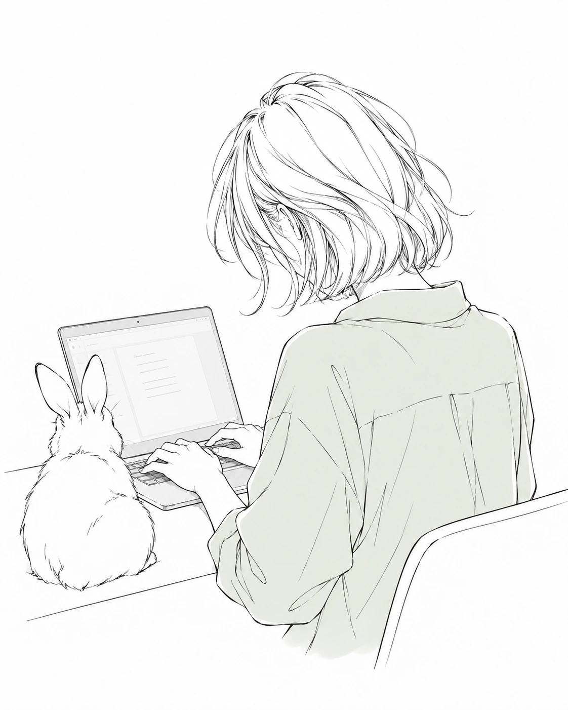
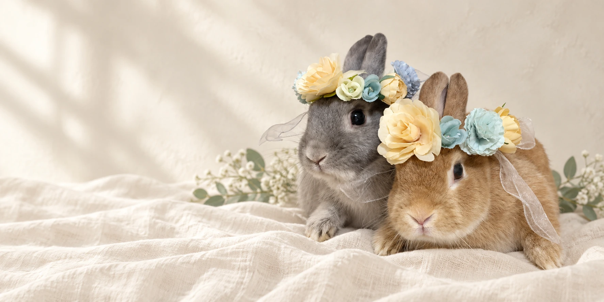
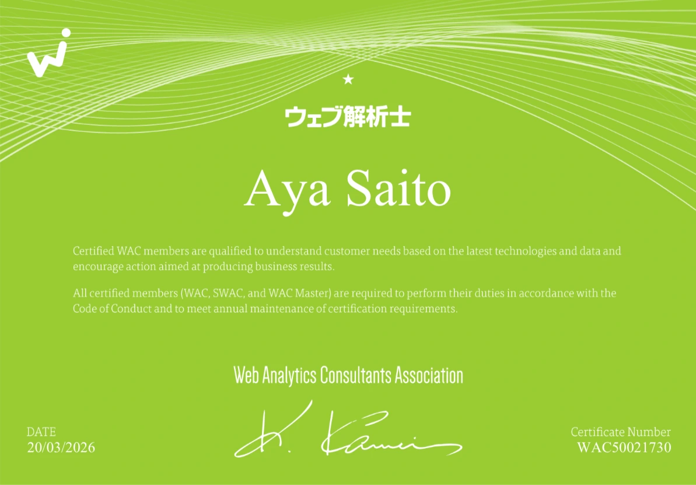

01
Webサイト制作・改善
新規制作の進め方や、既存サイトの案内・更新方法を相談したい方へ。ヒアリングから構成・デザイン・実装・公開、代理更新・運営講習まで、内容・規模に応じて担当範囲をご相談致します。
広島のWeb・グラフィックデザイナー
Hiroshima, Japan

不確定段階でのご相談でも、
お気軽にお問合せください。
01
新規制作の進め方や、既存サイトの案内・更新方法を相談したい方へ。ヒアリングから構成・デザイン・実装・公開、代理更新・運営講習まで、内容・規模に応じて担当範囲をご相談致します。
02
記事・商品・事業の情報を、画像や資料にまとめたい方へ。既存原稿や素材を整理し、バナー・チラシ・ロゴ・名刺・商品画像・スライドなど、掲載先と用途に合わせて制作します。
ロゴ・イラスト・漫画制作もご相談いただけます。イラスト・漫画は内容を伺い、対応可否や制作範囲をご相談します。制作工程の一部でAIを活用しています。
03
商品やキャンペーンの情報を更新したい方へ。商品ページ・販促画像の制作からサイトへの反映まで支援します。利用するECサービスと担当範囲を確認して進めます。
04
複数の制作物や修正依頼を整理して進めたい方へ。確認事項・優先順位・スケジュールを整理し、打ち合わせと関係者調整を制作実務とあわせて支援します。
単発の制作・継続的な業務委託
Web・ECの更新、販促画像や資料の制作、制作進行を承ります。時間・件数・担当範囲・費用・納期は個別にご相談致します。
2026 / 株式会社Reach
PRODUCTION SUPPORT
ONBOARDING / 2026
入社する人が必要な情報を受け取れる流れを考え、社内ルールや面談手順の整理を支援しました。
EARLIER PROJECTS
Webサイト・広告・紙面・ロゴなどの制作実績
目的・現在の状況・必要な制作物を伺います。
担当範囲・費用・納期を合意してから着手します。
制作物をご確認いただき、調整を進めます。
合意した内容で納品、または公開します。
必要に応じて更新・制作・進行支援をご相談いただけます。
案件の内容・規模に合わせて進め方を調整致します。

DESIGN WITH CARE
伝えたいことを
相手に届くかたちへ
ABOUT / AYA SAITO
斎藤 彩
Web・グラフィックデザイナー
株式会社Reach / 2026年3月〜10月
制作の道へ進むきっかけは雑貨店で働いていた頃に出会ったWebサイトでした。遊園地のように楽しいお店を画面でも表現できることに惹かれて独学を始め、Web・ECサイトから番組コンテンツや紙媒体へと仕事の幅を広げてきました。
ディレクションやカスタマーサポートでは相手の話を聞くことを大切にしてきました。Reachでは企画の整理から制作・改善まで担当しました。これまでの制作・顧客対応の経験を生かし、単発のご依頼から長く伴走できる関係を築いていきたいと考えています。
Wantedlyでプロフィール・インタビューを見る ↗EXPERIENCE
株式会社Reach
Web・グラフィックデザイナーとして顧客案件と自社の採用広報を担当し、ヒアリングから情報整理・デザイン・改修まで担当しました。顧客案件では改善提案と打ち合わせを主導し、優先順位・スケジュールの整理や関係者との調整まで進めました。
制作に加えて社内資料の整備やオンボーディングフローの検討も支援しました。エンジニア育成の勉強会にも参画し教材の改善とアプリ制作に取り組みました。
Reachの事業停止を機に、フリーランスとして独立。
制作と顧客調整を一緒に進める経験を、複数の制作物を継続して支援するご依頼に生かします。
2026年6月19日 1Q全社会でスタートダッシュ賞を受賞しました。
株式会社Helios
Webデザイナーとカスタマーサポートを兼任。600社以上を対象とする顧客対応の合間、在籍中35社以上のホームページ制作を担当しました。運営講習・代理更新を通じて公開後もお客様ご自身がサイトを使い続けられるよう支援しました。
公開時の制作だけでなく、使い方の説明や更新作業も含めたご相談に生かせる経験です。
公開後の更新・操作説明の対応範囲を見る ↗株式会社Skyward
自社サイトや楽天を含む複数のECサイトを同時に運営し、販売状況や施策に合わせてリアルタイムで更新・管理しました。商品ページ・販促バナー・キャンペーン画像の制作から各サイトへの反映まで担当しました。
画像制作と販売情報の更新をまとめて進める、ECの継続支援に生かします。
株式会社リベルテ
ディレクター兼デザイナーとして制作進行とデザインを担当しました。プロジェクトマネージャーとして全体のスケジュールを管理し、Slack・Backlogの導入やスプレッドシートの活用でタスクを共有しやすい環境を整えました。
Webに加えて新聞広告・営業チラシなどの紙媒体や資料も制作しました。進捗管理だけでなく用途に応じた情報整理と実制作まで携わりました。
ホームテレビ映像株式会社
番組やイベントに連動するWebコンテンツの制作・運営を担当しました。ポスターやノベルティのデザインに加えて動画・ライブ配信サイトとアプリの立ち上げにも参加しました。
株式会社ウィニーズ・ホールディングス
自社サイト・ECサイトの更新や商品ページ・キャンペーンのデザインを担当しました。販売戦略の企画会議への参加とともに社内資料やオリジナルノベルティ等も制作しました。
ネットマーケットジャパンコーポレーション株式会社
顧客サイトの代理更新・リニューアル・CMS構築に携わりました。リサーチからワイヤーフレームの作成とデザインガイドラインの共有まで担当しました。
株式会社ロフト
生活雑貨の販売に携わる中で店舗のWebサイトに出会い制作を学び始めました。
制作・更新・情報共有で使用してきたツールです。対応範囲は、ご依頼内容と利用環境を確認してご相談致します。

2026年3月20日／分析と改善への理解を深めるために学習
実務経験なし：Claude Code・Python・AWS・UI/UXデザイン
資格未取得：SNSマーケティング検定
STUDY / 2026
Python・開発環境・Gitの研修では受講者の視点から手順や説明を確認し、気づいた点を記録して教材の改善につなげました。
勉強会「Craft Community（クラコミ）」ではAIを活用したタスク管理アプリを制作しました。
アプリを開くLEARNING JOURNAL
制作の経験を土台に、SNS運用やプログラミングへ学びを広げています。「私の学校」は、その目標を日々の小さな課題に分け、試したことと気づきを残すために制作中の学習記録アプリです。
実際の学習テーマに沿った記入例を掲載しています。デモ内の予定・制作物・振り返りはサンプルで、完了した実績ではありません。
PERSONAL PROJECTS